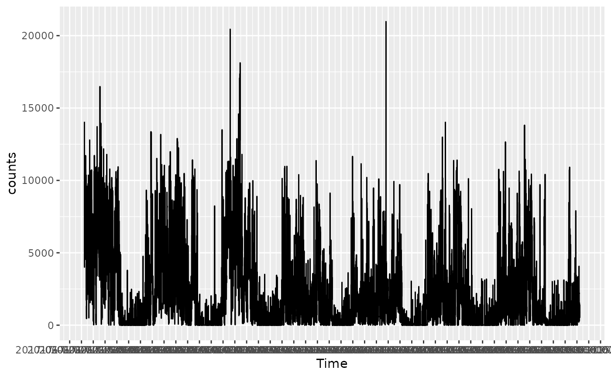
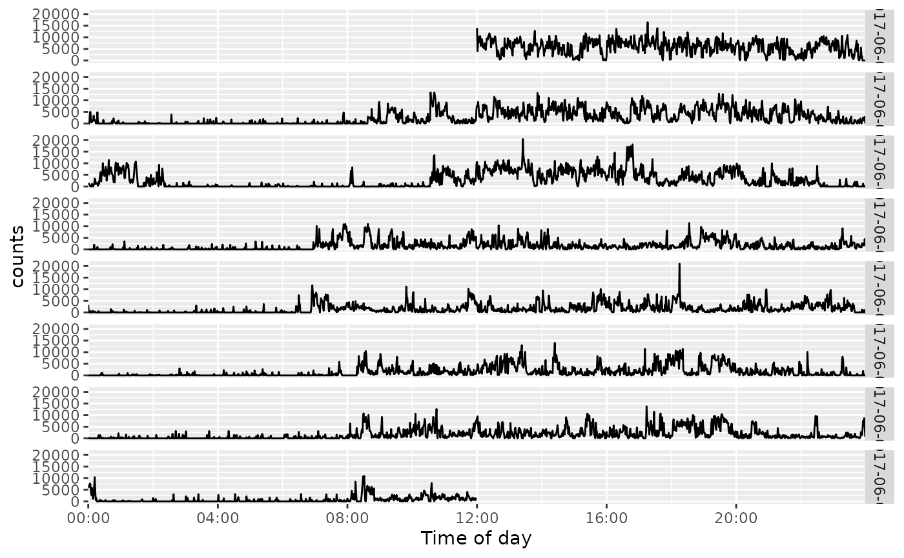
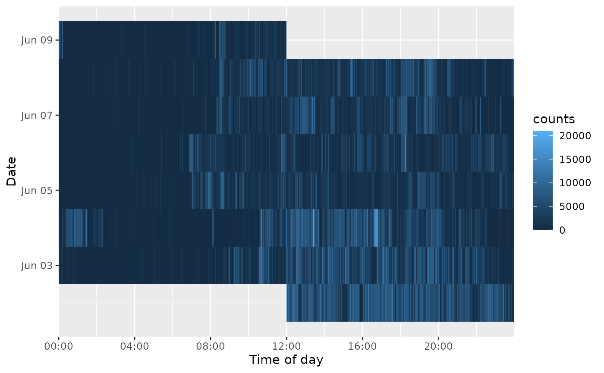

Plotting Minute-Level Activity Data
Source:vignettes/plot-minute-activity.Rmd
plot-minute-activity.RmdThis vignette uses the packaged acti_minute_data
accelerometer recording. It contains seven days of minute-level
vector-magnitude activity counts.
activity <- acti_minute_dataComplete recording
Use acti_plot_time() to inspect activity across the
entire recording. The breaks argument accepts ordinary
duration strings and sets the interval of the time-axis labels.
acti_plot_time(activity, counts, breaks = "4 hours")
Daily aligned rows
Use acti_plot_day() to align each day on the same
time-of-day axis. Each facet row is one calendar date, which makes
day-to-day activity patterns easy to compare.
acti_plot_day(activity, counts, breaks = "4 hours")
Date-by-time heat map
acti_plot_heatmap() uses the same alignment with counts
represented by fill.
acti_plot_heatmap(activity, counts, breaks = "4 hours")